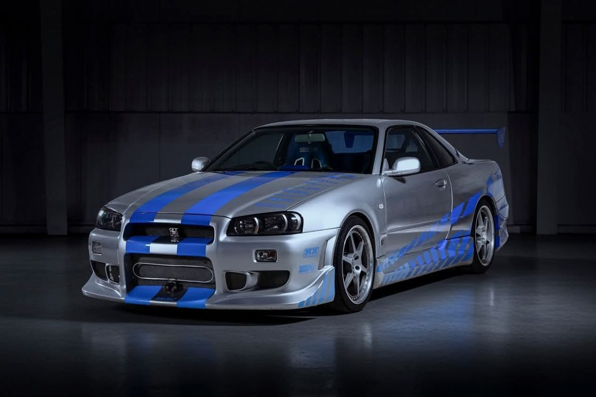
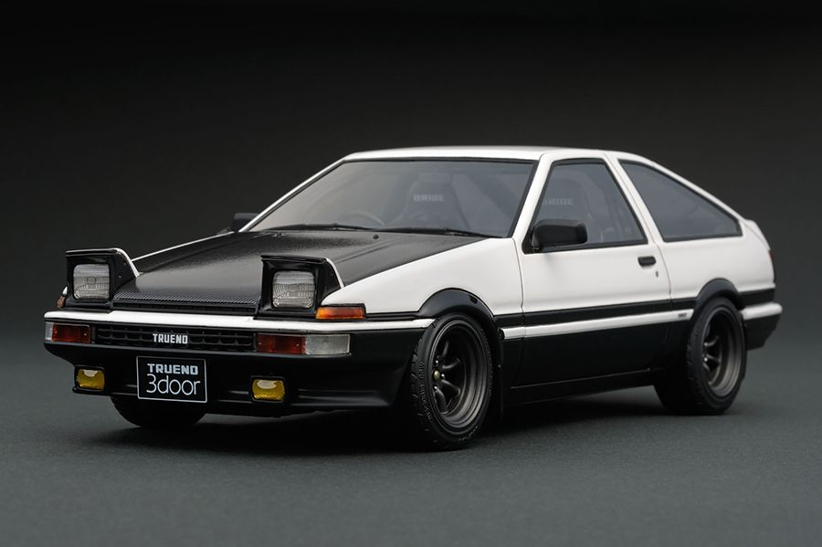
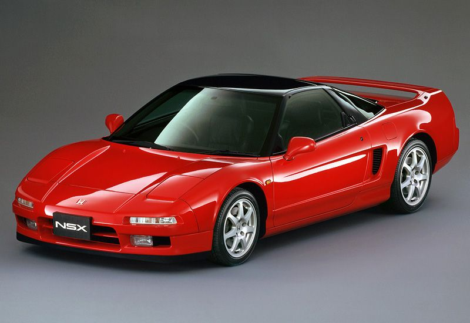
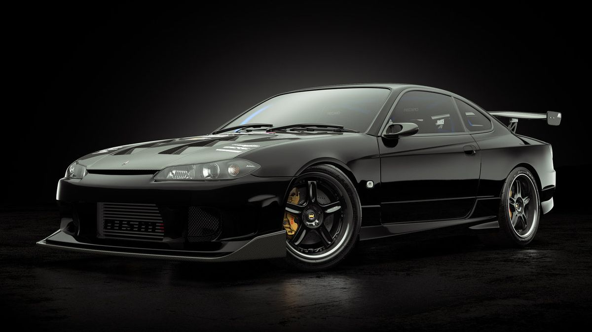
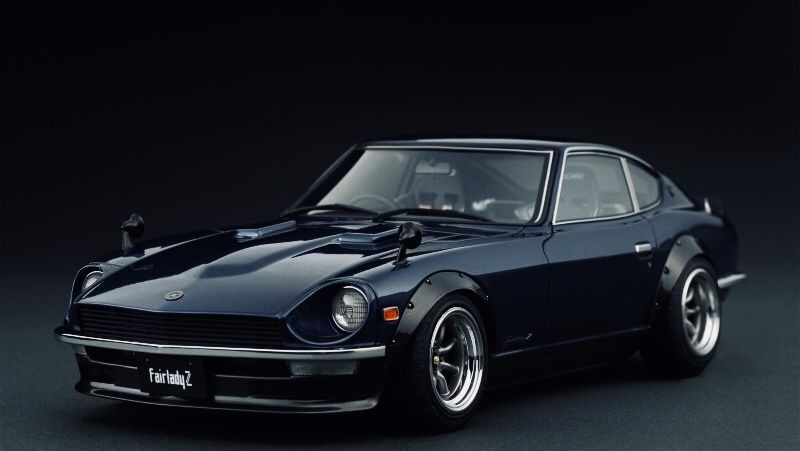
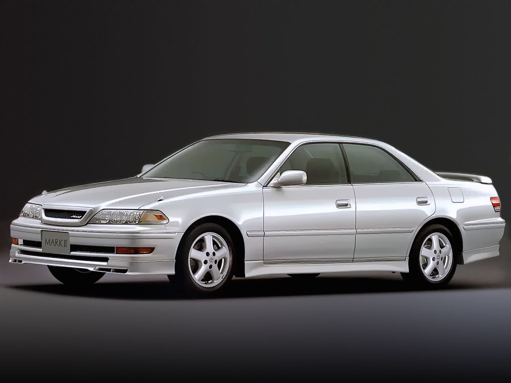

Japanese Domestic Market
JDM CAR
เว็บเก็บสะสมรถสปอร์ตญี่ปุ่นตำนาน ตั้งแต่ Fairlady Z ปลายยุค 60 ถึง GT-R และ Supra ยุค 90 ดูรูป รหัสตัวถัง และเรื่องราวของแต่ละคันได้ที่นี่
- 9 คันในคอลเลกชัน
- 4 ยี่ห้อ
- 1969 รุ่นเก่าที่สุด
- 1999 รุ่นใหม่ที่สุด

รถโปรด · No.01
Skyline GT-R R34
GT-R รุ่นสุดท้ายของสายตัวถัง Skyline ใช้เครื่อง RB26DETT หกสูบเรียงเทอร์โบคู่ ระบบขับสี่ล้ออัจฉริยะ ส่วนคันในรูปเป็นสีเงินพร้อมลายแถบสีน้ำเงิน
ตัวอย่างจากคอลเลกชัน
 A80
A80
Supra
Toyota · 1993

AE86
Sprinter Trueno
Toyota · 1983

NA1
NSX
Honda · 1990
Story · 1969–1999
STORY
JDM ย่อมาจาก Japanese Domestic Market คือรถที่สร้างมาเพื่อขายในญี่ปุ่น ในไทยมักใช้เรียกรถสปอร์ตญี่ปุ่นโดยรวม นี่คือเส้นทางสามสิบปีของรถในคอลเลกชันนี้
-
1969 · Nissan
Fairlady Z S30
สปอร์ตสองที่นั่งทรงจมูกยาว ราคาจับต้องได้ ส่งออกไปสหรัฐฯ ในชื่อ Datsun 240Z และทำให้รถสปอร์ตญี่ปุ่นเป็นที่รู้จักทั่วโลก
-
1983 · Toyota
Sprinter Trueno AE86
ขับหลัง น้ำหนักเบา เครื่องไม่แรงแต่สนุก กลายเป็นรถในตำนานของสายดริฟต์ และโด่งดังต่อจากการ์ตูน Initial D
-
1990 · Honda
NSX
ซูเปอร์คาร์วางเครื่องกลางลำ ตัวถังอะลูมิเนียมทั้งคัน พิสูจน์ว่ารถสปอร์ตสมรรถนะสูงก็ขับง่ายและใช้งานได้จริง
-
1991 · Mazda
RX-7 FD3S
เครื่องโรตารี่ 13B-REW เทอร์โบคู่ น้ำหนักเบา ทรงโค้งมนที่หลายคนยกให้เป็นหนึ่งในรถสปอร์ตที่สวยที่สุดของยุค
-
1993 · Toyota
Supra A80
ใช้เครื่อง 2JZ-GTE หกสูบเรียงเทอร์โบคู่ ที่ขึ้นชื่อเรื่องความทนทานและศักยภาพในการแต่งเพิ่มกำลัง
-
1996–1999 · ปลายยุคทอง
Chaser · EK9 · S15 · R34
Chaser JZX100 ซีดานสปอร์ต, Civic Type R EK9 ตัวแรงของซีวิค, Silvia S15 สายดริฟต์ และปิดท้ายด้วย Skyline GT-R R34 รุ่นสุดท้ายของสายตัวถัง Skyline GT-R
Why JDM
ทำไมรถกลุ่มนี้ถึงมีเสน่ห์
สร้างเพื่อญี่ปุ่น
รถ JDM ผลิตตามกฎและความต้องการของตลาดในประเทศ หลายรุ่นจึงมีสเปกหรือออพชันที่ไม่มีในรุ่นส่งออก
วิศวกรรมยุคฟองสบู่
ช่วงปลายยุค 80 ถึงยุค 90 ผู้ผลิตลงทุนกับเทคโนโลยีเต็มที่ ทั้งเทอร์โบคู่ ระบบขับสี่ล้อ และตัวถังน้ำหนักเบา
วัฒนธรรมการแต่ง
จากถนนภูเขา (touge) สู่สนามดริฟต์และงานแต่งเครื่อง ทำให้รถกลุ่มนี้มีชุมชนแฟน ๆ ทั่วโลกจนถึงทุกวันนี้
Collection · 9 คัน
JDM CAR
คอลเลกชันรถสปอร์ตญี่ปุ่นที่รวบรวมไว้ ตั้งแต่ Fairlady Z รุ่นแรกในปลายยุค 60 ไปจนถึง GT-R และ Supra ยุค 90 แต่ละคันมีรหัสตัวถัง เครื่องยนต์ และเรื่องราวของตัวเอง
รถโปรด · No.01
Skyline GT-R R34
GT-R รุ่นสุดท้ายของสายตัวถัง Skyline ใช้เครื่อง RB26DETT หกสูบเรียงเทอร์โบคู่ ระบบขับสี่ล้ออัจฉริยะ ส่วนคันในรูปเป็นสีเงินพร้อมลายแถบสีน้ำเงิน
ทั้งหมด
BNR34
Skyline GT-R
Nissan · 1999

S15
Silvia
Nissan · 1999

S30
Fairlady Z
Nissan · 1969
A80
Supra
Toyota · 1993
AE86
Sprinter Trueno
Toyota · 1983

JZX100
Chaser
Toyota · 1996
NA1
NSX
Honda · 1990
 EK9
EK9
Civic Type R
Honda · 1997
 FD3S
FD3S
RX-7
Mazda · 1991
About · เกี่ยวกับโปรเจกต์
ABOUT
เว็บไซต์คอลเลกชันรถ JDM ทำขึ้นเพื่อฝึกเขียน HTML และ CSS สำหรับงานออกแบบกราฟิก โดยเน้นการจัดวาง สี ตัวอักษร และการแสดงผลที่ใช้ได้ทั้งมือถือและเดสก์ท็อป
ผู้จัดทำ
ณัฐวุฒิ ตราชู
รหัสนักศึกษา 68061652
รายวิชา
GAD23867 Coding for Graphic Design
จุดประสงค์
รวบรวมรถสปอร์ตญี่ปุ่นที่ชอบเป็นคอลเลกชัน พร้อมรหัสตัวถัง ปี และเรื่องราวสั้น ๆ ของแต่ละคัน
Tech
เทคนิคที่ใช้ในเว็บนี้
Design
สีและฟอนต์
- Asphalt #0E1015
- Steel #171B24
- Pearl White #F4F1EA
- Rising Sun #E8112D
หัวข้อใช้ Racing Sans One ป้ายสเปกใช้ Chakra Petch และเนื้อหาภาษาไทยใช้ Anuphan